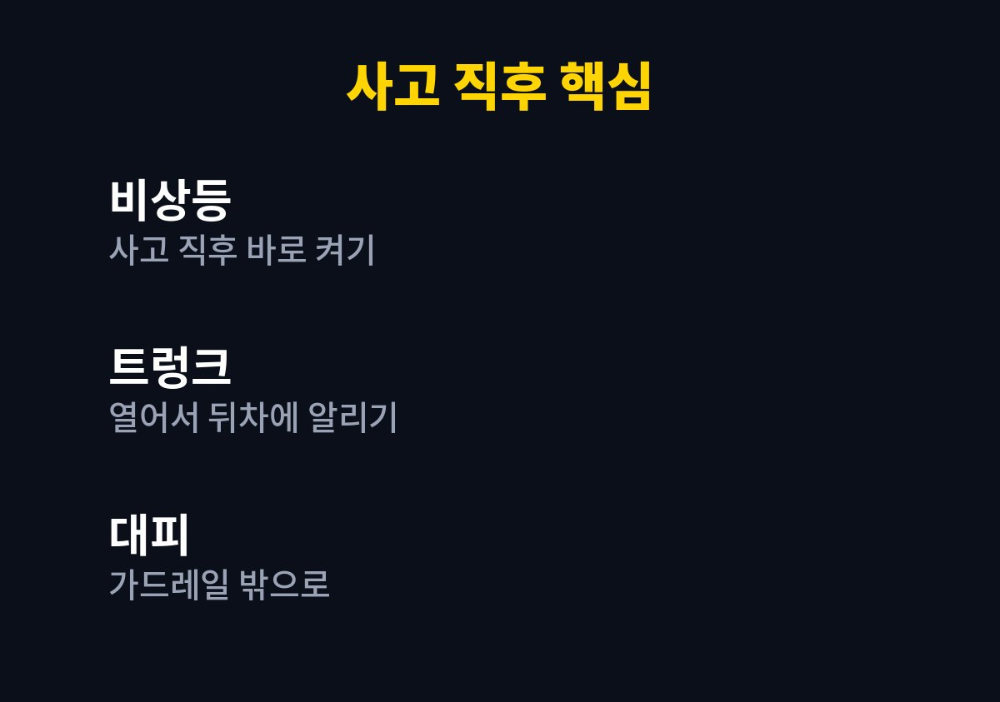
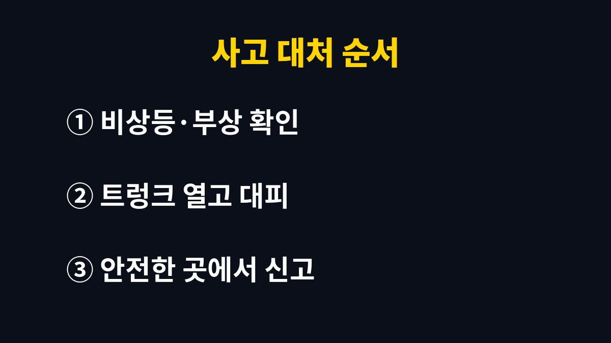

접촉사고 대처 순서에 대해 바로 따라 할 수 있도록 핵심부터 정리한다.
이 글은 접촉사고가 났을 때 무엇부터 해야 할지 머릿속이 하얘질까 걱정되는 운전자를 위해 쓴 글이다.
2026년 11월 기준 한국도로공사가 안내하는 사고 후 행동요령에 내가 차에 붙여 둔 순서를 더해 정리했다.
두 아이를 태우고 택배 물량을 나르러 다니다 보니 사고 순간의 순서를 미리 정해 두는 일이 무엇보다 먼저라고 느꼈다.
작은 접촉사고가 나면 대부분 먼저 차에 생긴 흠집부터 살핀다.
나도 주차장에서 범퍼가 살짝 닿았을 때 가장 먼저 한 일이 차 앞으로 걸어가 긁힌 자국을 본 것이었다.
그런데 도로 위라면 그 몇 분이 가장 위험한 시간이 된다.
뒤따르던 차가 멈춰 선 차와 사람을 늦게 발견하면 처음 사고보다 훨씬 큰 사고로 이어질 수 있다.
한국도로공사는 고속도로 2차 사고를 막기 위한 행동요령을 꾸준히 따로 안내하고 있다.
언론 보도에서는 2차 사고 치사율이 일반 사고보다 6.5배 높다는 분석도 전해졌다.
그 숫자를 보고 나서야 사고 직후 차 옆에 서서 통화하는 모습이 얼마나 위험한지 실감했다.
그래서 나는 사고 처리보다 대피를 먼저 하는 쪽으로 머릿속 순서를 바꿨다.
한국도로공사가 알리는 2차 사고 예방 요령은 흔히 비트밖스라는 말로 정리된다.
비상등을 켜고, 트렁크를 열어 뒤차에 알리고, 가드레일 밖으로 대피한 뒤, 스마트폰으로 신고하라는 뜻이다.
외우기 쉬운 말이라 나는 아이들과도 같이 소리 내어 연습해 두었다.
차를 움직일 수 있는 가벼운 사고라면 안전한 곳으로 옮긴 뒤 처리하는 것이 기본이다.
반대로 사람이 다쳤거나 차를 움직이기 어렵다면 무리하게 옮기지 말고 대피와 신고를 우선한다.
다친 사람이 있으면 112와 119 신고가 먼저이고, 보험사 연락은 그다음이다.
| 단계 | 공식 안내 핵심 | 내가 덧붙인 것 |
|---|---|---|
| 비상등 | 사고 직후 바로 켠다 | 버튼 위치 미리 확인 |
| 트렁크 | 열어서 뒤차에 알린다 | 아이는 갓길 쪽 문으로 |
| 대피 | 가드레일 밖으로 이동 | 아이 손부터 잡기 |
| 신고 | 안전한 곳에서 스마트폰으로 | 보험사 번호 즐겨찾기 |

사고가 나면 사람은 생각보다 침착하지 못하다.
그래서 나는 운전석 햇빛가리개 안쪽에 사고 순서를 한 줄씩 적은 메모를 끼워 두었다.
보험사 사고 접수 번호도 같은 메모에 적고 휴대폰 즐겨찾기에도 저장했다.
메모를 만든 뒤로는 막연한 불안이 조금 줄었다.
아이가 있는 집은 대피 순서가 더 복잡하다.
나는 아이들에게 사고가 나면 안전벨트를 풀고 아빠가 문을 열어 줄 때까지 기다리라고 미리 말해 두었다.
내릴 때는 차도 쪽이 아니라 갓길 쪽 문으로 내리는 것도 함께 연습했다.
주말에 빈 주차장에서 한 번 해 보니 아이들도 놀이처럼 받아들였다.
예전에는 현장 사진부터 남겨야 한다고 생각했다.
지금은 블랙박스 영상이 있다는 것을 믿고, 안전한 곳에서만 사진을 찍는다.
나는 차량 위치와 파손 부위, 상대 차량 번호판 위주로 남기고 나머지는 보험사 안내를 따른다.
아래 순서는 내가 메모에 적어 둔 그대로다.
도로 상황과 사고 정도에 따라 달라질 수 있으니 현장에서는 경찰과 보험사 안내를 따르는 것이 우선이다.

사고는 피하고 싶어도 언제든 생길 수 있다.
그래서 나는 사고 자체보다 사고 뒤 몇 분을 어떻게 보낼지를 미리 정해 두는 편을 택했다.
특히 아이를 태우고 다니는 집이라면 대피 순서를 가족 모두가 알고 있어야 실제 상황에서 덜 흔들린다.
차 안 메모 한 장과 아이들과의 짧은 연습만으로도 마음의 준비가 달라졌다.
다음 글에서는 사고 뒤 블랙박스 영상을 안전하게 백업해 두는 방법을 정리할 예정이다.
※ 2026년 기준 공공기관 안내와 개인 경험을 바탕으로 정리한 글이며, 차종과 연식에 따라 기준이 다를 수 있어 차량 설명서와 공식 안내를 함께 확인하길 바란다.